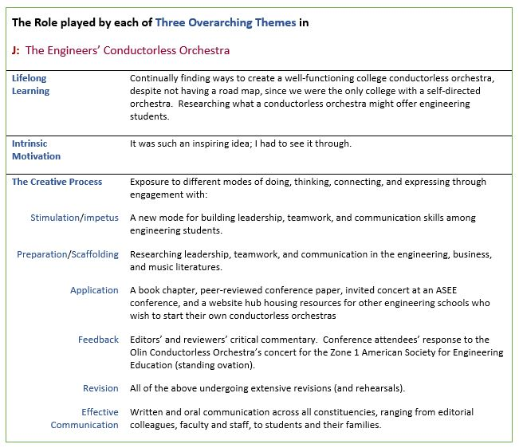

The Engineers’ Conductorless Orchestra covers three works, including a book chapter published by Springer Nature, a peer-reviewed conference paper (awarded ASEE Zone 1 Best Paper Prize), and a website hub designed to share the conductorless orchestra model with other engineering schools. These interdisciplinary works combining music and engineering convey how a conductorless orchestra develops students by providing a project-based learning lab for developing effective leadership, teamwork, and communication skills. The roles played by my three overarching themes enabled me to conceive of a self-directed orchestra for our new college, bring it to fruition—a time-intensive process developed over many years—and more recently, to introduce the model to engineering educators at other institutions.
Thanks to an opportunity emailed by Prof. Caitrin Lynch to the faculty in November 2015, my monograph “The Engineers’ Orchestra” was accepted for publication by Springer Nature as a book chapter in Creative Ways of Knowing in Engineering (2017), edited by Prof. Diana Baraiktarova of Virginia Tech and Prof. Michele Eodice of the University of Oklahoma at Norman. Publication as a book chapter, surrounded by those of other authors (including Prof. Zhenya Zastavker and Prof. Gillian Epstein of Olin College), has already helped plant the conductorless orchestra model in the minds of engineering educators. On the basis of the book chapter and performance videos, OCO was invited to perform for the ASEE Zone 1 International Conference on April 12, 2019, the first time an orchestra of engineering students—not to mention a conductorless orchestra—had done so.
The Engineers’ Orchestra develops students, namely by giving them an experiential lab for leadership, teamwork, and communication skills through their collective passion for playing music. By November 2019, the book chapter accumulated 450 purchased downloads, indicating significance for external impact, thus enabling the conductorless orchestra model to reach a larger audience, which in turn helps build & sustain the college’s reputation as an incubator for innovation in engineering education.
See this document for the full text of the book chapter "The Engineers' Orchestra: a conductorless orchestra for our time."
A follow-up paper “The Engineers’ Orchestra: a conductorless orchestra for developing 21st century professional skills” was accepted for publication in the Proceedings of the 2019 American Society for Engineering Education (ASEE) Zone 1 International Conference held in Niagara Falls, New York, April 11-13, 2019. Selected as the ASEE Zone 1 Best Paper for 2020, it can be accessed here.
This paper includes the results of a four-year study on the effectiveness of OCO for building professional skills in leadership, teamwork, and effective communication. A summary of the results show a year-to-year increase in OCO students’ understanding of leadership—including development of their own leadership ability—and student understanding of effective communication. Student development of their own communication skills ranged from 78% to 93% of respondents. Understanding of teamwork, and self-development of same, ranged from 78% to 88% of respondents. The number of respondents varied from 14 to 19, depending on the given year. Results of the full study results can be accessed here.
The Engineers’ Orchestra contributes to the Olin ecosystem in many ways. It links synergistically with Engineering Admissions since the engineering applicant pool is often strong in music. It supports the efforts of the Post-graduate Planning staff to successfully place students as interns and professionals in engineering positions: Industry has been calling for skills in leadership, teamwork, and communication for over 20 years now. The Engineers’ Orchestra supplements the Arts, Humanities, and Social Sciences programs that teach effective communication for students in engineering colleges and universities nationwide. It helps support engineering courses that have significant teaming components, as well as leadership positions manifested throughout the engineering community, from student engineering clubs like Formula SAE to top administration and management.
The Engineers’ Orchestra is a bold, new idea that can enter the engineering curriculum at home and abroad. It offers a project-based learning lab that builds upon the musical ability of student engineers to help cultivate professional skills.
But why not just teach these skills in other coursework? Why focus on engineer-musicians? Brain research suggests that musicians are already primed for leadership, teamwork, and communication. Not only do musicians exhibit linguistic advantages over non-musicians, but they also have a relatively larger cerebellum and corpus callosum than non-musicians (male 2003 study). A larger cerebellum implies greater motor coordination and improved cognitive function. A larger corpus callosum suggests more interaction and transfer between the brain’s two hemispheres, since the corpus callosum connects both hemispheres. It therefore makes sense for educators to nurture and support their engineer-musicians; the raw material already exists. Why not give them an orchestra to call their own—a conductorless orchestra where they practice leadership, teamwork, and effective communication in a large team environment—while doing something they love—music?
A rationale and resources for a conductorless orchestra now exist that can apply to diverse engineering schools, large and small, throughout the United States. As a first step in exporting the Engineers’ Orchestra to other engineering schools, an Olin student and I developed the “Engineers’ Conductorless Orchestra website Hub.”
Developed since 2002, the Olin Conductorless Orchestra model features core values with clear expectations, team-based organizational structures, and constructive feedback. Over the years, OCO evolved a meaning-making process of leadership, similar to that described by W.H. Drath and C.J. Palus in Making Common Sense: Leadership as Meaning-making in a Community of Practice. According to Drath and Palus, meaning-making leadership arises out of a group’s realization and desire to make meaning, to make sense of what they want to achieve. A leader of the meaning-making process in a community of practice shifts from the question “How can I make things happen?” to asking:
In successful meaning-making, the leadership process becomes more distributed. Through trial, error, and experimentation, the Olin Conductorless Orchestra evolved a distributed process of meaning-making leadership.
Effective leadership requires excellent communication and teaming skills. Research has shown that music-making confers enhanced listening comprehension, hearing, and signal discrimination. OCO musicians use their instruments, eyes, and ears to communicate with each other. In doing so, they form a community of practice, i.e., a team that encourages shared and rotated leadership. Each musician accepts responsibility for team output and delivery goals. Furthermore, “each team member must develop qualities of a leader such as risk taking and receptivity to new ideas and directions, in addition to technical expertise”, as described by A. Gilboa and M. Tal-Shmotkin in "String quartets as self-managed teams: an interdisciplinary perspective." A conductorless orchestra offers a natural environment for collaboration among engineer-musicians, while building, sustaining, and contributing to a team.
With Summer 2019 funding from the Olin Integrated Project Fund, I took a first step towards situating the conductorless orchestra within today’s engineering curricula by working with Luis Zuniga ’21 to create a website hub. The Engineers’ Conductorless Orchestra (ECO) Hub provides useful resources for other schools wishing to start their own conductorless orchestras: blueprints, orchestral arrangements, videos, and live concert performances. Expanding the conductorless orchestra to these institutions is a bold goal, yet the infrastructure, model, and methods—ever evolving—are all there since inception in 2002.
The ECO Hub project not only helps develop students, it also promises external impact through dissemination. It speaks to Olin’s mission: “prepare students to become exemplary engineering innovators who recognize needs, design solutions and engage in creative enterprises for the good of the world.” Yet to effectively recognize needs, design solutions and engage in creative enterprises for the good of the world, engineering innovators can benefit from experiential understanding and development of leadership, teamwork, and communication to advance, and better situate, their ideas. By offering OCO’s resources in an easily accessible format to other engineering schools, the Engineers’ Conductorless Orchestra website Hub can help plant a project-based learning lab for professional skills in engineering curricula nationwide, and perhaps beyond. For example, one difficulty for any engineering school wishing to start a conductorless orchestra will be instrumentation, i.e., in all likelihood, there will not be the standard numbers of strings, winds, brass, and percussion that form a standard orchestra. The ECO Hub offers orchestral arrangements of works selected by students, thus having appeal to engineer-musicians 18-22 at other institutions. The arrangements I’ve created for myriad combinations of instruments, all in zipped Sibelius files, can be easily ported elsewhere.
Funding for this website hub came from Olin’s Integrated Project Fund. Thanks to encouragement from Prof. Mark Somerville (Former Provost and Dean of the Faculty), I submitted a grant proposal to the Fund which was awarded.
I then worked with Luis Zuniga ’21 to build the website hub—a complex project with many moving parts and substantial content.
The ECO Hub can be found at this page.
Here are some representative performances by the Olin Conductorless Orchestra, 2008-2019.
Haydn Sinfonia No. 48 in C Major, “Maria Theresia”: first movement (Allegro), Spring 2008.
Composite video excerpts (Holst: Jupiter from The Planets and Lee Jisu: Arirang Rhapsody), Spring 2011.
Arturo Marquez Danzon No. 2, Spring 2013.
Beethoven Creatures of Prometheus, Fall 2015.
Saint-Saens Danse Bacchanale, Fall 2015.
Dvorak Symphony No. 9 in E minor: fourth movement (Allegro con fuoco)—Spring 2016.
Gershwin An American in Paris: Spring 2017.
Mozart Serenade in Bb for 13 Winds, K. 361: Finale—Spring 2019.
Berlioz “Marche Hongroise” from La Damnation de Faust: Spring 2019.
In sum, the Engineers’ Conductorless Orchestra projects embody a bold, new idea that can enter engineering curricula at home and abroad by offering a project-based learning lab for cultivating leadership, teamwork, and effective communication—skills deemed necessary for 21st century engineers by the National Academy of Engineering and industry, thus impacting students inside and outside Olin College. The book chapter (The Engineers’ Orchestra: a conductorless orchestra for our time) advances a powerful thesis that the raw talent for our future tech leaders can be found among the musician-engineers present in engineering schools, a thesis supported by the engineering, music, and business literatures, as well as my own experience with the Olin Conductorless Orchestra. I worked with the orchestra and then Asst. Vice President and Director of Communication Joe Hunter to videotape OCO for YouTube so that we could attract concert venues outside of Olin for our students. In January 2019, I wrote the organizers of the ASEE Zone 1 International Conference to be held in Niagara Falls, NY, in April 2019. I sent them my published book chapter and YouTube recordings of the orchestra. This resulted in the first ever orchestral performance by student engineers for engineering educators, not to mention a conductorless orchestra. A follow-up, peer-reviewed paper published in the conference proceedings, as well as a grant proposal to the Olin Integrated Project Fund enabled the next step: an Engineers’ Conductorless Orchestra website Hub that offers resources to others who might want to start their own conductorless orchestras.
With respect to Map 2, the Engineers’ Conductorless Orchestra projects unite music and engineering by speaking directly to student engineer-musicians within an engineering school environment. The thematic table below captures the role played by my three overarching themes in producing the Engineers’ Conductorless Orchestra, thus addressing Map 3.
